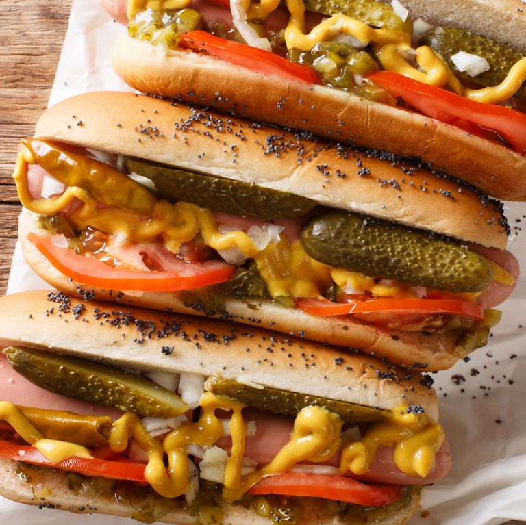
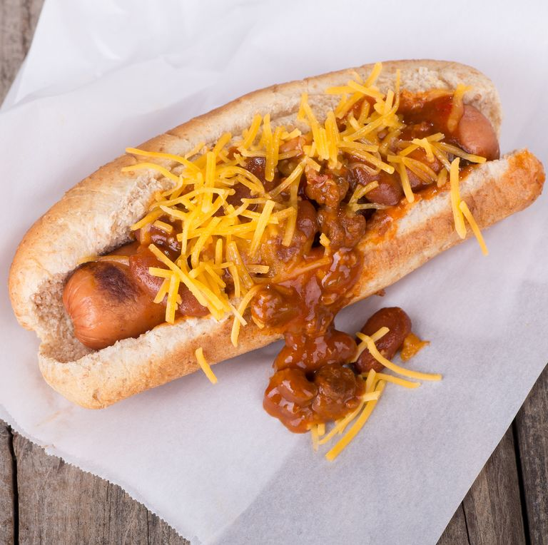
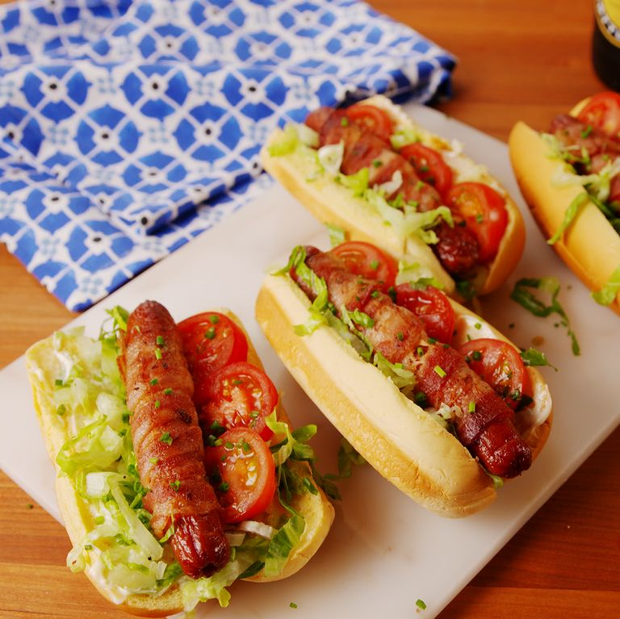
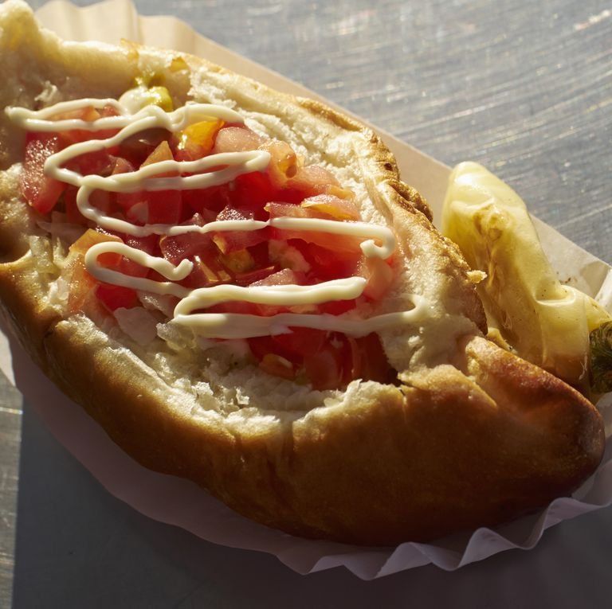

Chicago-style dogs are some of the most well-known and unique hot dogs out there. The iconic dog from the Windy City comes loaded with an array of toppings, but always includes fresh tomato, big spears of pickle, hot peppers, sweet onion, and relish.
$3,69
Atlanta

Atlanta residents typically top their savory dogs with a cool, creamy, crunchy slaw. It's a southern thing—you'll see.
$3,69
Detroit

Though far from the New York beach and amusement park, the famous dog from Detroit is named the "Coney Dog," and the beloved city spots that serve them are still called Coney Islands today. Smothered in beefy chili, shredded Cheddar cheese, and raw onion, these hearty hot dogs are an iconic Detroit city dish.
$3,69
San Francisco

Hot dogs wrapped in or topped with bacon are popular throughout the western United States, but in the San Francisco area, it's common to find creamy mayo and other cooling toppings in addition to the smoky bacon. BLT dogs—topped with lettuce and tomato—are the way to go.
$3,69
Tuscon and Phoenix

Arizona's most well-known cities are home to the Sonoran, a hot dog that's first wrapped in smoky bacon, then topped with pinto beans, onion, mustard, mayo, and chopped tomatoes, onions, and jalapeГ±os.